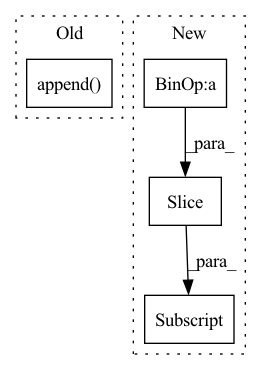

Pattern ID :3607
Before Change
if idx != 0:
x = torch.cat(stacked, dim=1)
x = self.net[idx](x)
stacked.append( x)
output = torch.cat(stacked[1:], dim=1)
return outputAfter Change
x_residual = x_residual + x
in_channels = growth_rate[idx]
stacked_channels = sum(growth_rate[idx+1:] )
sections = [in_channels, stacked_channels]
if idx != num_blocks - 1:In pattern: SUPERPATTERN
Frequency: 3
Non-data size: 4
Instances Fragment ID: 17745694
Project Name: tky823/dnn-based_source_separation
Commit Name: 8fb5cd5f4f8b4a435d058aef6204904f657abea0
Time: 2021-06-06
Author: 40362510+tky823@users.noreply.github.com
File Name: src/models/d3net.py
M Class Name: D3Block
N Class Name: D3Block
M Method Name: forward(2)
N Method Name: forward(2)
M Parent Class: nn.Module
N Parent Class: nn.Module
M File Name: src/models/d3net.py
N File Name: src/models/d3net.py
M Start Line: 357
M End Line: 367
N Start Line: 414
N End Line: 430
Before Change
stacked = []
output = []
stacked.append( input)
for idx in range(self.depth):
if idx != 0:
x = torch.cat(stacked, dim=1)After Change
x_residual = x_residual + x
in_channels = growth_rate[idx]
stacked_channels = sum(growth_rate[idx+1:] )
sections = [in_channels, stacked_channels]
if idx != depth - 1: Fragment ID: 17745695
Project Name: tky823/dnn-based_source_separation
Commit Name: 8fb5cd5f4f8b4a435d058aef6204904f657abea0
Time: 2021-06-06
Author: 40362510+tky823@users.noreply.github.com
File Name: src/models/d2net.py
M Class Name: D2Block
N Class Name: D2Block
M Method Name: forward(2)
N Method Name: forward(2)
M Parent Class: nn.Module
N Parent Class: nn.Module
M File Name: src/models/d2net.py
N File Name: src/models/d2net.py
M Start Line: 51
M End Line: 62
N Start Line: 51
N End Line: 67
Before Change
if idx != self._num_stages:
up = self._up[level](x)
out_up.append( x)
// Forward out
outputs = {"P" + str(level): self._out[level](fm) for level, fm in enumerate(reversed(out_up))}
After Change
def forward(self, x):
// Forward lateral
lateral_out = [lateral(fmap) for lateral, fmap in zip(self._lateral, list(x.values())[-self._lateral_levels:] )]
// Forward up
up_out = [] Fragment ID: 17745692
Project Name: bwittmann/transoar
Commit Name: 9ae94457a856281a065fc795699b26ef7eb12811
Time: 2022-04-26
Author: bastian.wittmann@tum.de
File Name: transoar/models/backbones/attn_fpn/attn_fpn.py
M Class Name: Decoder
N Class Name: Decoder
M Method Name: forward(2)
N Method Name: forward(2)
M Parent Class: nn.Module
N Parent Class: nn.Module
M File Name: transoar/models/backbones/attn_fpn/attn_fpn.py
N File Name: transoar/models/backbones/attn_fpn/attn_fpn.py
M Start Line: 95
M End Line: 111
N Start Line: 107
N End Line: 126